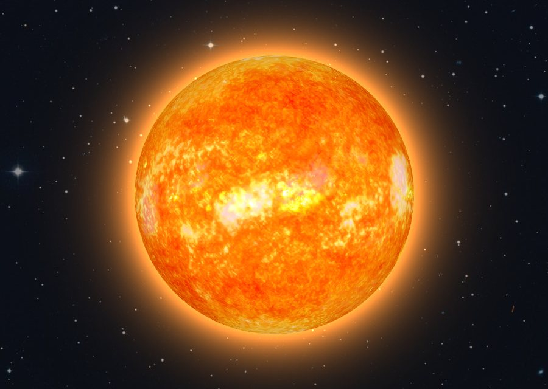
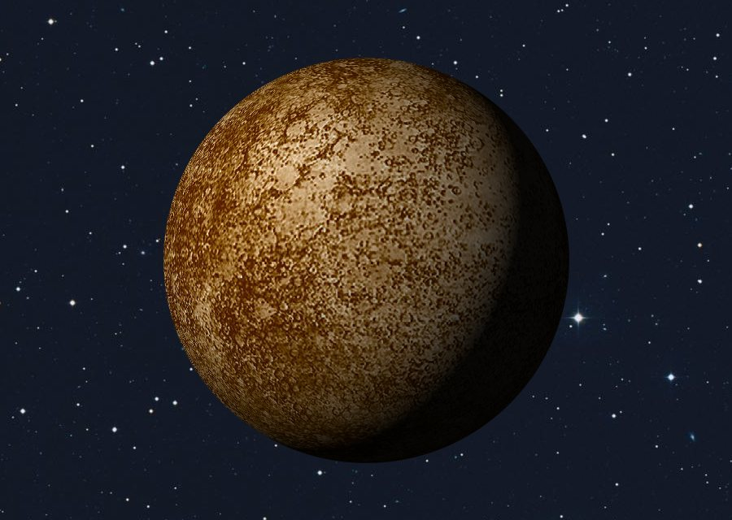
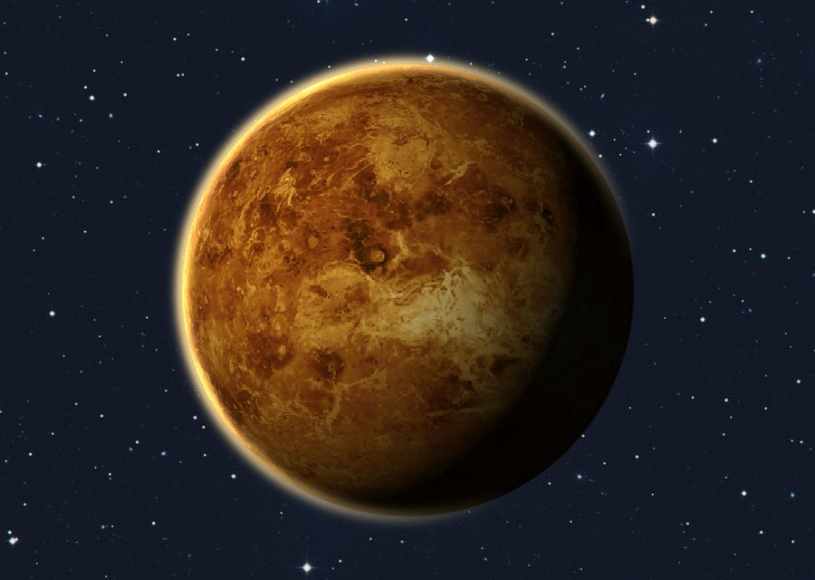
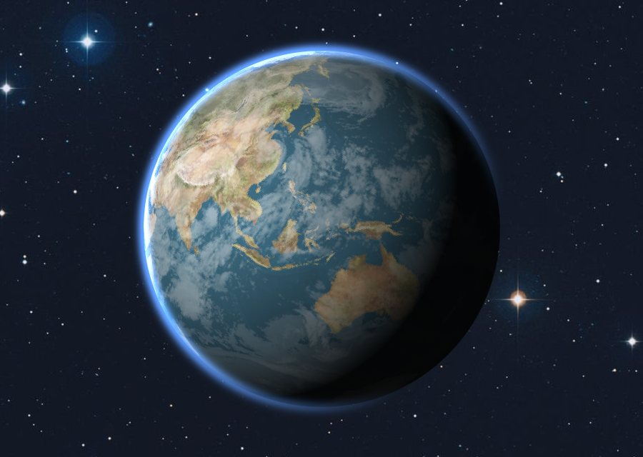
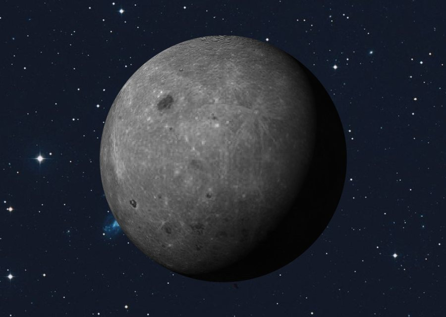
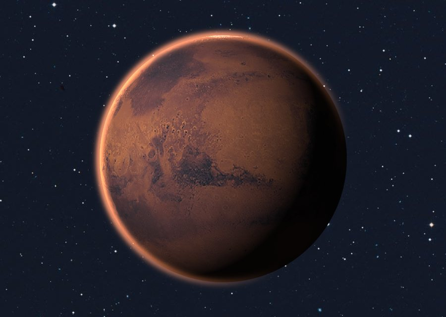
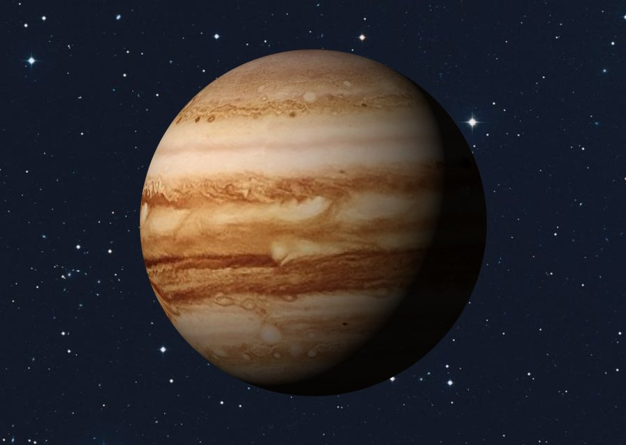
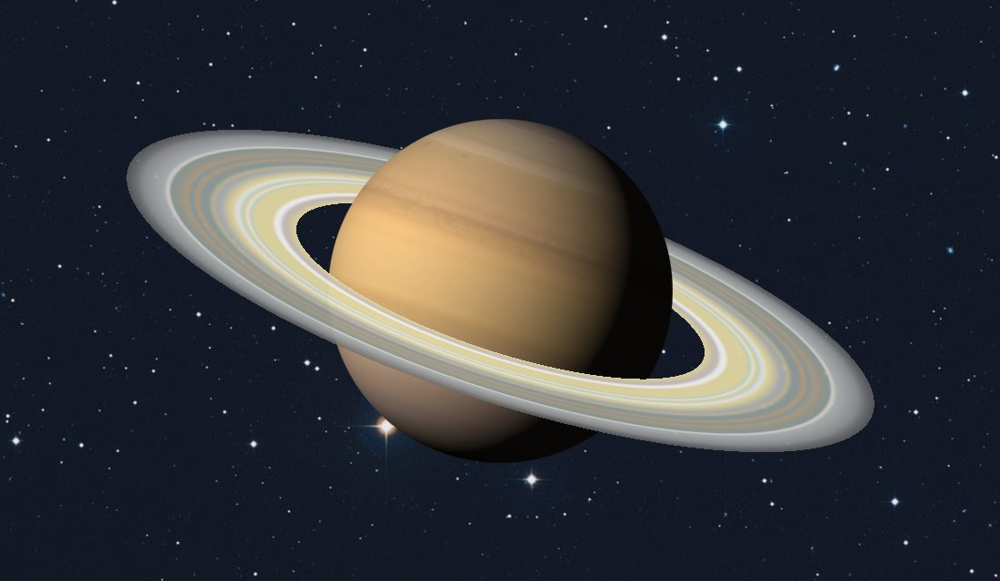
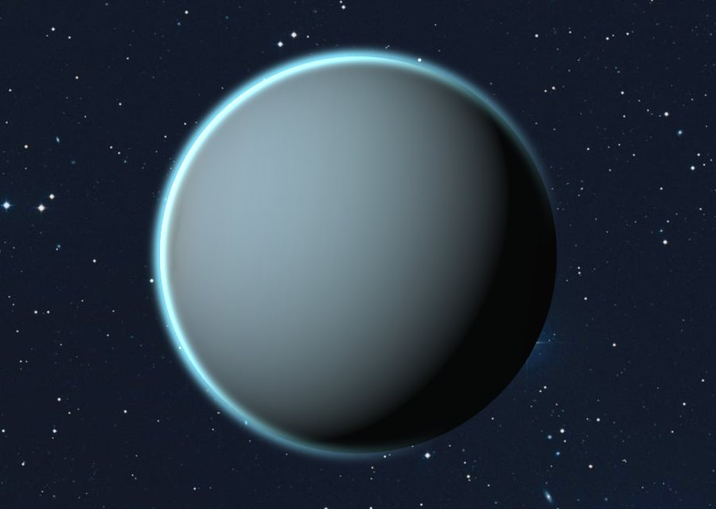
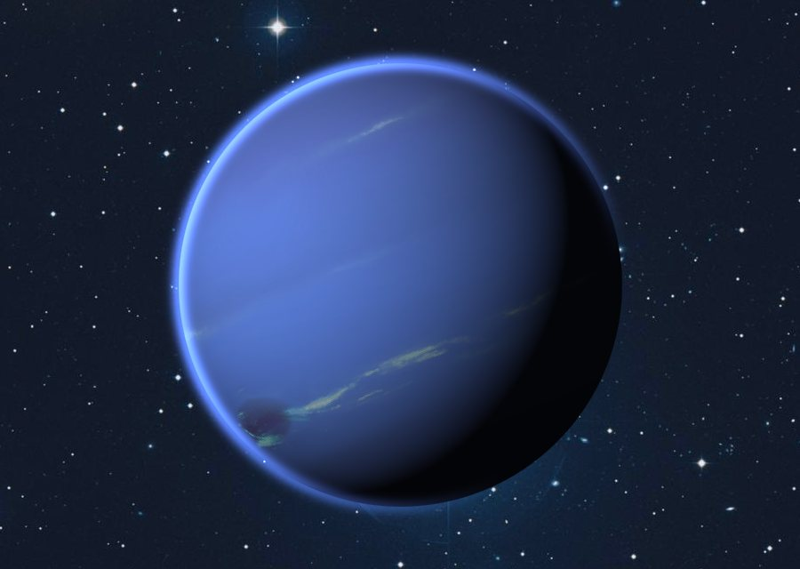

Солнечная система — это Солнце и всё, что движется вокруг него под действием его притяжения: восемь планет, их спутники, карликовые планеты, астероиды и кометы. Планеты делят на две группы. Четыре ближние, планеты земной группы, небольшие и твёрдые, с каменной поверхностью. Четыре дальние — гиганты, у которых нет твёрдой поверхности в привычном смысле, зато есть мощные атмосферы, кольца и десятки спутников.
Солнце

Солнце — звезда средних размеров, на которую приходится около 99,8% всей массы Солнечной системы. В его ядре водород превращается в гелий, и именно эта реакция даёт свет и тепло. Температура видимой поверхности — около 5500 °C, а в ядре она достигает примерно 15 миллионов градусов.
Свет от Солнца идёт до Земли чуть больше восьми минут. Значит, глядя на Солнце, мы всегда видим его таким, каким оно было несколько минут назад.
Меркурий

Меркурий — самая маленькая и самая близкая к Солнцу планета. Плотной атмосферы у него нет, поэтому тепло не задерживается: днём поверхность нагревается примерно до +430 °C, а ночью остывает до −180 °C. Год на Меркурии длится всего 88 земных суток, зато солнечные сутки, от восхода до восхода, — около 176 земных суток.
Поверхность планеты покрыта кратерами и внешне напоминает Луну.
Венера

Венера почти такого же размера, как Земля, но условия на ней совсем другие. Атмосфера состоит в основном из углекислого газа, а давление у поверхности примерно в 90 раз выше земного. Парниковый эффект разогревает планету примерно до 465 °C, поэтому Венера горячее Меркурия, хотя и дальше от Солнца.
Венера вращается в обратную сторону по сравнению с большинством планет и очень медленно: сутки на ней длиннее, чем год.
Земля и Луна

Земля — единственное место во Вселенной, где точно известна жизнь. Около 71% её поверхности покрыто водой, а атмосфера из азота и кислорода защищает от излучения и метеоров. Расстояние до Солнца как раз такое, что вода может оставаться жидкой.

Луна — единственный естественный спутник Земли. Она находится в среднем на расстоянии около 384 тысяч километров и всегда повёрнута к нам одной стороной. Притяжение Луны вызывает приливы и отливы, а сама она постепенно удаляется от Земли — примерно на 3,8 сантиметра в год.
Марс

Марс называют Красной планетой: его поверхность покрыта пылью, богатой оксидами железа. Атмосфера очень разрежённая, а средняя температура — около −60 °C. Сутки на Марсе длятся почти как на Земле, около 24 часов 37 минут.
На Марсе находится вулкан Олимп высотой около 22 километров — самая высокая известная гора в Солнечной системе. У планеты два маленьких спутника неправильной формы: Фобос и Деймос.
Юпитер

Юпитер — самая большая планета: он массивнее всех остальных планет, вместе взятых, примерно в два с половиной раза. Это газовый гигант, состоящий в основном из водорода и гелия. Полосы на нём — облака, вытянутые сильными ветрами вдоль экватора.
Большое красное пятно — гигантский шторм, по размеру больше Земли, который наблюдают уже несколько сотен лет. У Юпитера десятки спутников, а самый крупный из них, Ганимед, больше планеты Меркурий.
Сатурн

Сатурн знаменит своими кольцами. Они состоят из бесчисленных кусочков льда и камня — от пылинок до глыб размером с дом. При огромной ширине кольца очень тонкие: в большинстве мест их толщина не превышает нескольких десятков метров.
Средняя плотность Сатурна меньше плотности воды. Его крупнейший спутник Титан окружён плотной атмосферой, а на поверхности у него есть озёра из жидкого метана и этана.
Уран

Уран открыл Уильям Гершель в 1781 году — это первая планета, найденная с помощью телескопа. Уран относят к ледяным гигантам: кроме водорода и гелия, в нём много воды, аммиака и метана. Именно метан придаёт планете голубовато-зелёный цвет.
Ось вращения Урана наклонена почти на 98 градусов, поэтому планета движется по орбите словно лёжа на боку. Из-за этого полюса по очереди десятилетиями освещены Солнцем или погружены в темноту.
Нептун

Нептун — самая далёкая от Солнца планета. Его открыли в 1846 году необычным способом: сначала положение планеты вычислили по отклонениям в движении Урана, и только потом нашли её в телескоп. Один оборот вокруг Солнца Нептун делает примерно за 165 земных лет.
На Нептуне дуют самые быстрые ветры в Солнечной системе — до 2000 километров в час. Насыщенный синий цвет ему, как и Урану, дают метан и другие вещества в атмосфере.